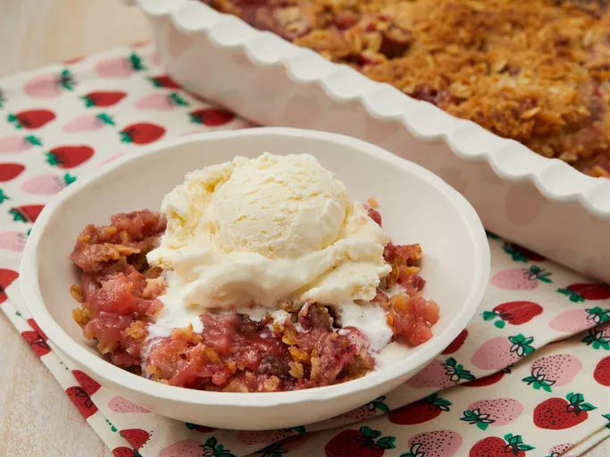

Home
Strawberry Rhubarb Crisp Recipe

Description
This strawberry rhubarb crisp has a sweet and tart layer of soft fruit with a
crispy oat topping. This dessert is perfect for those who wonder what to do with
that big rhubarb plant in the garden. This recipe is your answer — it will have
you coming back for more!
Ingredients
Fruit Layer:
- 3 cups sliced fresh strawberries
- 3 cups diced rhubarb
- 1 cup white sugar
- 3 tablespoons all-purpose flour
Crunch Topping:
- 1 1/2 cups all-purpose flour
- 1 cup packed brown sugar
- 1 cup rolled oats
- 1 cup butter
Steps
- Gather all ingredients.
- Preheat the oven to 190 degrees C.
- To make the fruit layer: Mix strawberries, rhubarb, white sugar and flour
together in a large bowl. Place the mixture in a 9x13-inch baking dish.
- To make the crisp topping: Combine 1 1/2 cups flour, brown sugar, oats and butter
and mix until crumbly. You may want to use a pastry cutter for this. Sprinkle
on top of the rhubarb and strawberry layer.
- Bake in the preheated oven until crisp and lightly browned, about 45
minutes.
- Enjoy!